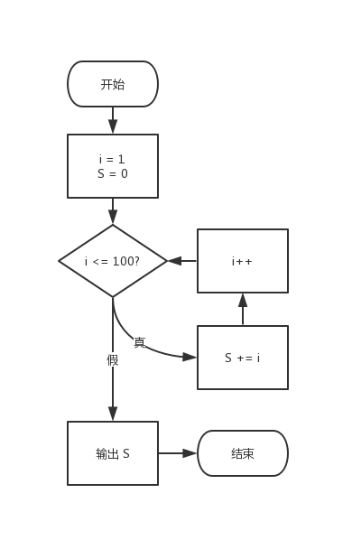

C 语言语法系列（5）：while 语句
循环是什么？
在我们写代码的时候，难免遇到重复的操作。例如我想尝试从 1 到 100 求和。但显然，数学公式可以解决这一点：
显然，这种模式完全可以解决这个问题。不过，从代码的角度来看，我们也可以尝试让电脑计算 100 次求和的操作，这样依然可以解决，而且电脑运算得很快，所以我们完全可以忽略 100 次重复计算和一次计算公式得到结果的时间差。这个时间差我们完全感觉不到。
那么，如何进行重复性的运算呢？我们先理清楚执行思路：

如图所示，我们首先为 i 和 S 赋值，这些数值在后续都会使用到，这个称为初始值。然后，我们尝试先判断一次是否这个数字 i 超过了 100。如果没有超过，我们就执行第一次把 i 累加到 S 之中。可见 S 表示整个计算的和值结果。接着，i 增大一个单位。于是，我们重新作一次判断，看此时的 i 是否超过了 100（超过 100 就不计算在内了）。如果没有超过，就重复操作，继续把 i 的新数值累加到 S 之中，并再次增大 i 一个单位；如果 i 已经超过了 100，整个计算的活动行为就结束了。于是我们此时输出 S 的结果，并退出程序，整个程序执行完毕。
看得出来，这个逻辑是比较清楚的。
while （循环）语句
说完基本的计算思路，下面我们来说说它的代码的语法格式。
基本写法
while 语句可以解决上述的写法。我们尝试来看一下整体的逻辑。
1 |
|
首先我们依旧尝试为 i 和 S 进行初始赋值，然后直接进入循环部分。当 i 不超过 100 的时候，就进行累加，并且要增大 i 变量的数值。最后执行完毕后，输出 S 的结果即可。
由此可见，这个类型的执行逻辑还是比较清晰的。有一点看起来像是瑕疵的地方在于，我们明明知道 i 此时初始数值是 1，没有超过 100，而为什么非要在最开始就写上判断条件 i <= 100 来判断是否小于等于 100 呢？这不是废话吗？
实际上，这个程序当你输入了一个无效的数值时，比如 107，这个时候根本不可能计算从 107 到 100 的和（我们的目的是从 1 增大到 100，而 107 超过了 100），所以直接就退出了循环。另外，while 语句的格式要求把条件放到最开始，所以我们不得不这么做。
所以，总的来说，while 语句的写法是这样的：
1 | while (condition) |
在 while 旁边写执行的元素的判断条件，然后在大括号里写上执行反复操作的语句。
while语句也经常被称为while循环。
作出优化
显然，在前文我们学习了自增自减运算符的前后缀书写方式的计算问题。当 ++ 写在变量之后，则表示变量在使用完成后最后增大一个单位。这使得我们原本需要写成两句话的语句可以写成一句话：
1 | S += i++; |
这个写法等价于先执行 sum += i; 语句，然后执行 i++; 语句增大 i 变量一个单位。
所以，while 语句和 if 执行的模式完全一样，如果重复执行的语句只有一个语句，则可以省略大括号，所以上述写法融入到 while 里则可以写成这样：
1 | while (i <= 100) |
另外一个示例
下面我们来看另外一则示例。我们还是用求和的思路来讲解，不过我们稍作改动。如果我们要计算从 1 到某个数的和，不过问题变为了”请求出从 1 到 $n$ 的所有整数的和 $S$ 在第一次超过 2400 的时候，此时的 $n$ 的值“。这个问题怎么解决呢？
实际上，可能你想得很复杂。我们知道，while 语句的写法是一个条件加上重复运算的语句，所以这个题目完全可以只修改执行的条件：
1 | int i = 1, S = 0; |
注意条件改为了 S <= 2400，其它的地方都没变化。最后只需要输出 i 的结果就可以了。